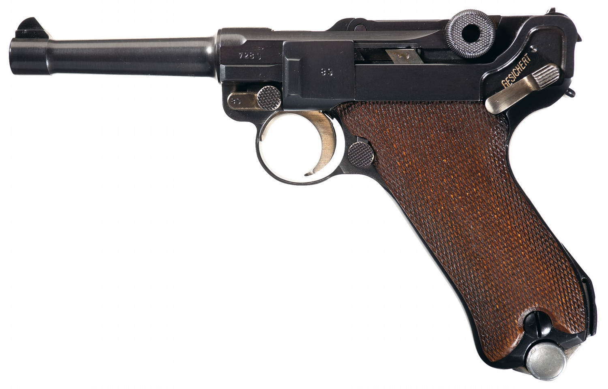
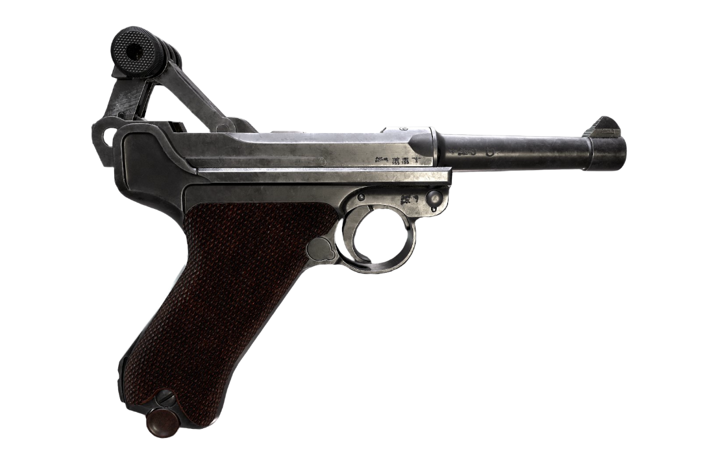

La pistola FN Mod. 1903 del calibre 9 x 20 mm SR Browning Long, también conocida por Browning 1903, fue creada en 1902 y patentada en 1903 por el afamado diseñador norteamericano John Browning a petición de la firma belga, Fabrique Nationale d`Armes de Guerre (FN), que le requirió para que ideara un arma más potente y de mayor facilidad de desarme que la FN 1900.
La Browning 1903 fue la precursora de la mayoría de las semiautomáticas del mundo. Aunque para los estándares modernos su calibre puede pecar de poca potencia, el arma era fiable, precisa, cómoda de portar y su sistema de recarga era infinitamente más rápido que cualquier otro de los revólveres militares contemporáneos.
En 1922, el gobierno de Estonia, que recientemente se había declarado independiente, firmó un contrato con la FN para que les surtiera de estas pistolas, siéndoles entregadas en diferentes envíos hasta el año 1926. Fueron punzonadas en destino con el marcaje "SOM" en la parte posterior de la corredera, lo que indicaba que pertenecían al "Sojaministeerium" o Ministerio de la Guerra de Estonia e iban acompañadas de su funda culatín y de sus cargadores corto y largo.
En 1936 el Ejército de Estonia declaró obsoleto el calibre 9 mm Browning Long retirando estas pistolas del servicio y siendo vendidas 4.400 unidades ese mismo año al Gobierno de la República Española, inmersa en plena Guerra Civil y con una seria carencia de armas cortas. Éstas fueron enviadas a España junto con sus culatines y cargadores en 1937.
Luger


En 1901, el Ministerio de Guerra alemán decidió reemplazar su ya caduco revólver reglamentario, el Reichrevolver Mod. 1879, por una pistola semiautomática, convocando un concurso al cual se presentaron distintas firmas. A su término quedaron como finalistas la pistola Luger presentada por la fábrica DWM, y la C.96 presentada por Mauser. No fue hasta 1904 cuando se adjudicó el concurso a la pistola de George Lueger, pero no fue el ejército alemán el primero en declararla reglamentaria, este honor le corresponde el ejército suizo, que reconoció antes que nadie sus virtudes y la declaró reglamentaria para los oficiales de su Estado Mayor el 4 de Mayo de 1900 en calibre 7,65 mm Parabellum.
En Agosto de 1904 la marina alemana, anticipándose al ejército, fue la primera en adoptarla. Se la denominó Modelo 1904 y tenía un cañón de 150 mm y miras ajustables a 100 y 200 metros. Su construcción finalizó con la Primera Guerra Mundial.
Siguiendo el criterio de la Marina, en febrero de 1908 el ejército propuso también su adopción. Así, el 22 de agosto de 1908 el emperador Guillermo II firmó oficialmente la orden que declaraba reglamentaria para el Ejército de Tierra la “Pistole Parabellum 08”, más conocida como P.08, encargándole su producción a las fábricas Erfurt y DWM que en 1914, con el estallido de la Primera Guerra Mundial, aceleraron su fabricación (sin mermar por ello su calidad), hasta niveles insospechados. Así, a mediados de 1915 eran capaces de producir 700 Luger al día, manteniendo este nivel hasta el final de la guerra.
Entre 1920 y 1924, este comité visitó nada menos que 6.935 veces las fábricas de armas, mandando destruir 4.560.861 unidades de armas cortas.
El motivo del cese de su producción fue debido a que en 1938, el Alto Mando la reemplazó por la pistola Walther P. 38, pero en la práctica esta sustitución no se llevaría a cabo hasta 1942.
Colt 1911-A1
A principios del siglo XX el Gobierno de los Estados Unidos veía como armeros de renombre como Steyr, Luger, Mauser o Glisenti eran admirados por sus armas semiautomáticas de última generación, siendo declaradas reglamentarias en varios países del viejo continente, mientras que allí seguía vigente el viejo revólver Colt Modelo 1892.
Debido a esta circunstancia, el Estado Mayor del Ejército decidió convocar un concurso para dotar a sus tropas de un arma más acorde con aquellos tiempos. A dicho concurso se presentaron todas las firmas de renombre mundial.
Entre los años 1906 y 1907, se realizaron las pertinentes pruebas con diversas pistolas de los armeros antes citados, destacando desde un principio la Browning Modelo 1905, a la que se le exigió diversas modificaciones que se llevaron a efecto entre 1908 y 1910. Finalmente en 1911 tuvo lugar la gran final entre la Colt, diseñada por Browning, y la Savage; la elección se decantó por la pistola Colt. Así, concretamente el 29 de marzo de 1911, fue declarada reglamentaria para dotar a las Fuerzas Armadas estadounidenses en calibre 45 ACP, siglas que significan cartucho para pistola.
El cartucho .45 ACP fue el resultado de los estudios elaborados en los EE.UU. por una comisión de médicos militares encabezada por el doctor Le Garde, que a principios de siglo buscaban el ideal para un arma corta de guerra. Este cartucho, con una velocidad inicial 250 m/s, posee un alto poder de detención debido a su diámetro de 11,43 mm y al elevado peso de la bala de 14,9 gramos, trasmitiendo una gran energía en el momento del impacto. Por contra, el elevado volumen de los cartuchos constituye uno de los pocos defectos de la pistola Colt al limitar la capacidad del cargador a 7 balas.
La pistola Colt modelo 1911 se convirtió en el invento con mayor trascendencia del armero John Moses Browning. De su gran calidad y resistencia probadas son buena muestra la enorme cantidad de firmas armeras de todo el mundo que la han copiado, entre las cuales se encuentran las españolas Astra, Star y Llama.
Pocas armas cortas han aguantado un puesto de tanta responsabilidad, participando en muchas intervenciones militares y en los lugares más variados del mundo, tales como Filipinas, I y II Guerra Mundial, Corea, Vietnam, etc, intervenciones que han constituido un excelente banco de pruebas durante esos 74 años.
La pistola Colt 1911, junto con la alemana Walther P.38, está considerada por la mayoría de los expertos como la mejor pistola militar de todos los tiempos. Sólo hasta el final de la Segunda Guerra Mundial, se habían fabricado la nada desdeñable cifra de 2.660.318 unidades.
Revolvers
Un revólver es un arma de fuego que utiliza un tambor giratorio para contener las municiones. El tambor se carga a través de la parte posterior del arma, y cada cámara del tambor contiene una bala.
Revolver 1892
El Modelo 1892 (también conocido como "revólver Lebel" y "Saint Etienne 8 mm") es un revólver francés producido por la Fábrica de armas de Saint-Étienne (MAS) como un reemplazo del MAS 1873. Fue el arma auxiliar estándar de los oficiales del Ejército francés durante la Primera Guerra Mundial.
El Modelo 1892 es un revólver con armazón macizo, cuyo tambor pivota hacia la derecha dentro de un armazón aparte para su recarga. El Modelo 1892 entró en servicio en 1893 y fue principalmente empleado por los oficiales del Ejército francés durante la Primera Guerra Mundial, para después ser empleado por la Policía francesa hasta mediados de la década de 1960.
Un arma corta fiable y con buen acabado, el Modelo 1892 disparaba el cartucho 8 x 27 R Lebel, que tenía un poder de parada equivalente al del 7,65 x 17 Browning. Además tenía un calibre menor al de muchos otros revólveres militares de la época, incluyendo al Webley y al MAS 1873, su predecesor.
Aunque fue originalmente diseñado como arma auxiliar para oficiales, se fabricaron más de 350.000 revólveres Modelo 1892 entre 1892 y 1924. Fue empleado por el Ejército francés, la Armada francesa y la Gendarmería Nacional, entre otros. Con frecuencia es erróneamente llamado "revólver Lebel" por el Coronel Nicolas Lebel, a pesar de que no hay evidencia que este estuvo involucrado en la creación del revólver o su cartucho.Los suboficiales continuaron empleado el viejo revólver MAS 1873, pero también se les suministró con frecuencia pistolas semiautomáticas de calibre 7,65 mm (la Ruby) durante la Primera Guerra Mundial. El Modelo 1892 fue oficialmente reemplazado por pistolas semiautomáticas en 1935, pero muchos de estos revólveres fueron empleados en la Segunda Guerra Mundial y fueron llevados a los Estados Unidos como recuerdos.
Revolver Webley
Fueron comienzos duros para la Webley debido a que en esa fecha los revólveres de la firma británica Adams y los de la norteamericana Colt, que había abierto una fábrica en Londres, eran una dura competencia. Con el tiempo llegó a ser la firma más importante de Europa en la producción de revólveres pues proveía a todo el extenso Imperio británico.
La firma Webley fabricó revólveres dotados de todos los sistemas: percusión, Lefaucheux, fuego anular y fuego central. Su fama fue tal que la Smith & Wesson les concedió en 1865 licencia para fabricar los suyos con la única condición de que fueran destinados a Europa. También construyó pistolas semiautomáticas, pero nunca contaron con la aceptación obtenida por sus revólveres. Su primera pistola semiautomática aparece en 1903 preparada para disparar el brutal 455. Una versión mejorada de ésta fue declarada reglamentaria para la marina británica en 1913 con la denominación de Webley Mark I.
Uno de sus éxitos fue lograr que declararan reglamentario en 1868 su revólver Mod. R.I.C. Royal Irish Constabulary -Real Cuerpo de Policía Metropolitana Irlandesa- para dotar a su policía, siendo también adoptado por las de Sudáfrica y Australia. También fue muy popular su revólver British-Bulldog de 1878 gracias a su corto cañón y gran calibre. Este modelo fue uno de los más copiados a lo largo de todo el mundo. Con él asesinó Charles Jules Guitean al Presidente de los Estados Unidos, James A. Garfield en julio de 1881.
En 1897 se asoció, para beneficiarse de sus patentes, con otros dos célebres armeros ingleses: W.C. Scott & Sons y Richard Ellis & Sons, formando la compañía Webley & Scott Revolver & Arms, con sedes en las ciudades de Londres y Birmingham. En 1906, Ellis se retiró de la sociedad, pasándose a llamar definitivamente Webley & Scott Ltd.
Pocos ejércitos han sido tan conservadores como el británico. Mientras los demás países se inclinaban por las pistolas semiautomáticas -los Estados Unidos tenían como reglamentaria la Colt Modelo 1911 y Alemania la Luger P. 08- Gran Bretaña permanecía fiel a su revólver Webley.
En 1915, en plena I Guerra Mundial, el revólver Webley Mark VI, fue declarado reglamentario para el ejército británico, sustituyendo al modelo Mark V, que fue el primer revólver de esta firma que usó pólvora sin humo. Lo primero que nos llama la atención al verlo es su tamaño exagerado, pero pensemos que cumplía perfectamente con el cometido para el que era requerido: la eficacia en la lucha cuerpo a cuerpo, ya que a la I Guerra Mundial también se la recuerda como la Guerra de las Trincheras, pues debido a los gases y a las bombas de niebla, era relativamente fácil ir de una trinchera a otra.
Los revólveres Webley Estuvieron en servicio hasta 1947 en que fueron sustituidos por la pistola FN H.P., después de haber servido durante las dos guerras mundiales, la guerra de los Boers y en infinidad de insurrecciones indígenas, entre la que destaca la de los Cipayos en la India.